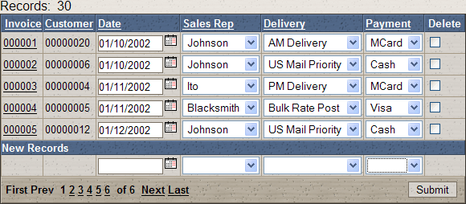
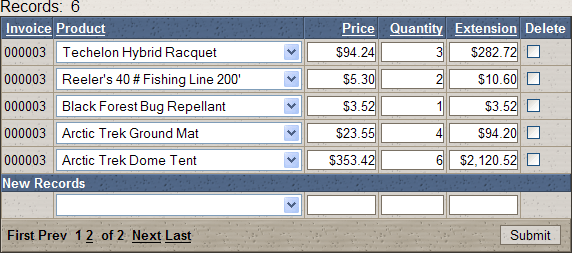

Automatically Populating Linking Field Values when Doing Data Entry
The following scenario describes a situation in which you want to automatically populate "linking" fields in a grid component menus.
Assume that you have an application with the following characteristics:
You have a grid component called Orders that displays data from your Orders table.
You have a grid component called Items that displays data from your Items table.
You have a page called OrdersPage.A5W that displays the Orders grid. The alias (component name) for the component on this page is OrdersGrid.
You have a page called ItemsPage.A5W that displays the Items grid. The alias for the component on this page is ItemsGrid.
The Orders grid has a column that displays links. When the user clicks on the link in a particular row, the ItemsPage.A5W page is opened, showing the items for the selected order.
The Orders grid and the Items grid are "linked" by the Invoice_Number field which they have in common. ( Note : It is possible for grid components to be linked on multiple fields: e.g. Firstname and Lastname.)
When the user enters new records into the Items grid, the Invoice_Number field (i.e., the "linking" field) is automatically filled in with the correct order number (the order number of the row in the Orders grid that the user clicked in to open the ItemsPage.A5W page).
 Note: It should really
not be necessary to include the Invoice_Number
field in the Items grid because the Items
grid typically is used to display the items for a single order.
Note: It should really
not be necessary to include the Invoice_Number
field in the Items grid because the Items
grid typically is used to display the items for a single order.
 Note: Another approach
to automatically populating linking fields in a grid component is to use
GridLinker or TabbedGridLinker components to link the grids together.
The approach described here differs from a GridLinker or TabbedGridLinker
in that only one grid at a time is displayed. In a GridLinker both the
parent grid and all of its child grids are displayed on the same page.
In the approach described above, each page that is displayed contains
only a single grid, and therefore, the pages display more quickly.
Note: Another approach
to automatically populating linking fields in a grid component is to use
GridLinker or TabbedGridLinker components to link the grids together.
The approach described here differs from a GridLinker or TabbedGridLinker
in that only one grid at a time is displayed. In a GridLinker both the
parent grid and all of its child grids are displayed on the same page.
In the approach described above, each page that is displayed contains
only a single grid, and therefore, the pages display more quickly.
Alpha Five makes it easy to create this type of application by defining a special query string for the links in the Orders grid that open the ItemsPage.A5W page.
Creating the Grids
Create the Orders grid based on the Invoice_Header table of the AlphaSports database.
On the Component Type menu make the grid "updateable".
On the Grid > Fields menu select a number of fields. Make sure to include the Invoice_Number field.
Create the Items grid based on the Invoice_Items table of the AlphaSports database.
On the Component Type menu make the grid "updateable".
On the Grid > Fields menu select a number of fields. Make sure to include the Invoice_Number field. Picture
{kind=link}

Orders Grid

Items Grid
Here is how you would define the links for the link control in the Orders grid:
Select the "Invoice_Number" field in the Selected Fields list.
Set its Display Settings > Control type as "Link".
Set its Link Properties > Link address type as "Computed from fields in the Grid".
Set its Link Properties > Link address to the following expression:
|
ItemsPage.A5W?ItemsGrid_link_1C=Invoice_Number={Invoice_Number} |
The general form of the template for the link is:
< TargetPage > ? < ComponentAlias > _link_ < LinkingFieldNumber >< LinkingFieldType > = < LinkingFieldName > = < LinkingFieldValue >
If the parent and child grid are linked on more than a single field, then the query string is repeated for each linking field, incrementing the < LinkingFieldNumber > for each linking field. For example, say you have two grids that are linked on AccountNumber (a numeric field) and Location (a character field). The template for this link would be:
|
MyTargetPage.A5w?myGrid_link_1C=AccountNumber={AccountNumber}&myGrid_link_2N=Location={Location} |
Note that the < LinkingFieldType > is specified by a single character ("C" for the first linking field and "N" for the second linking field). Also note that the < LinkingFieldValue > is not quoted even if it is a character value.
Continuing with our example, assuming that the order number in row 1 of the Orders grid is "001" and in row 2 is "002", the link address for the link control in the first two rows of the grid would be:
|
MyTargetPage.A5w?myGrid_link_1C=AccountNumber={AccountNumber}&myGrid_link_2N=Location={Location} |
The values generated for these URLs would be:
|
ItemsPage.A5W?ItemsGrid_link_1C=Invoice_Number=001 ItemsPage.A5W?ItemsGrid_link_1C=Invoice_Number=002 |
When the user click the link in the first row, the browser will:
Open the ItemsPage.A5W page.
Filter the Items on the page with the filter expression: Invoice_Number="001".
Ensure that all new records added automatically set the Invoice_Number field to "001".
Contrasting the '_Link' and '_Filter' Query String Parameters
In the above example, we used the "_Link" parameter in the query string to serve two purposes:
to specify the filter to use for the grid component
to specify the value for the linking fields in the component.
The "_Filter" parameter can also be used in a query string to specify the filter for a grid component. For example, the following URL will open the ItemsPage.A5W page, showing only the order for order number "001":
|
ItemsPage.A5W?ItemsGrid_Filter=Invoice_Number="001" |
However, if this URL opened the ItemsPage.A5W page, then if the user entered new records and did not explicitly set the Invoice_Number field to "001", the new order items would not be linked to the correct parent record.
See Also
Contents, A5W Page Filter and Order Syntax